With aligned sequences you learn not only whether two plants carry the same allele but also how many mutations separate them. Block 8 uses that information to measure haplotype and nucleotide diversity, test whether the population has grown or remained stable, see whether lineages are ordered in space, draw the haplotype network and date divergences with fossils or a substitution rate.
A haplotype is a distinct sequence. The diversity of a sample of sequences has two sides: how many haplotypes there are and how different they are from one another. Two populations with the same four haplotypes can have very different nucleotide diversity if in one the haplotypes differ by a single base and in the other by twenty.
| Index | Calculation | What it tells you |
|---|---|---|
| h · haplotypes | number of distinct sequences | Depends strongly on sample size. |
| Hd · haplotype diversity Nei (1987) | n/(n − 1) · (1 − Σ xi²) | Probability that two sequences drawn at random are different haplotypes. Ranges from 0 to 1. |
| k · mean differences | average number of differences over all pairs of sequences | How many mutations separate two sequences on average. |
| π · nucleotide diversity Nei (1987) | k / L | The same idea per site; it allows fragments of different lengths to be compared. |
| S · segregating sites | sites with more than one base | The basis of θW and Tajima’s D. |
| η · minimum number of mutations | Σ (bases at the site − 1) | Equal to S if no site has three or four bases. |
| θW Watterson (1975) | S / Σi=1n−1 1/i | Another estimate of θ = 4Neμ, based on how many sites vary. |
The app uses complete deletion: a site with a gap (-) or an ambiguous base (N, R, Y…) in any sequence is excluded from all the analyses in cards 2 to 7. In this way all sequences are compared over the same sites. The dating in section 9.5, by contrast, uses all sites, because its likelihood model handles missing data. Check in Sites how many sites remained.
| Hd | π | Usual reading |
|---|---|---|
| High (> 0.5) | Low (< 0.005) | Recent expansion from a small population: many haplotypes, all very similar. |
| Low | Low | Recent, severe bottleneck or founder effect. |
| High | High | Large, stable population, or a mixture of lineages that were once separated. |
| Low | High | A few highly divergent haplotypes: the intermediate ones have been lost. |
The history of a population leaves its mark on the shape of its genealogy. In a population of constant size, sequences descend from common ancestors spread throughout time. After an expansion, almost all of them coalesce at about the same time, close to the onset of growth, and later mutations are found in a single sequence (rare variants). If the sample mixes old lineages, mutations at intermediate frequencies abound. Neutrality tests compare these signatures with what is expected in a neutral population of constant size.
| Test | What it compares | How to read it in the app |
|---|---|---|
| Tajima’s D (1989) | k (pairs) against θW (sites): they agree under neutrality and constant size. | Two-tailed, α = 0.05. Negative: excess of rare variants; positive: excess of intermediate ones. |
| Fu’s Fs (1997) | Are there more haplotypes than expected given k? It uses the Ewens sampling formula. | One-tailed (negative values), α = 0.02, as Fu recommends. The most sensitive to growth. |
| R2 (Ramos-Onsins and Rozas, 2002) | Difference between the number of unique mutations in each sequence and k/2. | One-tailed (small values), α = 0.05. The most powerful with small samples. |
| D* and F* (Fu and Li, 1993) | Unique mutations (singletons) against the total number of mutations η, or against k. | Shown without a test; useful to see whether the signal comes from the singletons. |
| Raggedness index r (Harpending, 1994) | How ragged the distribution of pairwise differences (mismatch) is. | One-tailed (small values), α = 0.05: a smooth distribution suggests expansion. |
If the differences between all pairs of sequences are counted, a population that grew suddenly produces a curve with a single peak, and a stable population produces a ragged curve with several peaks. The app fits by least squares the sudden expansion model of Rogers and Harpending (1992), with three parameters: θ0 and θ1 before and after the expansion, and τ = 2ut, the time since the expansion in mutational units. If you supply the mutation rate per site per year, the app converts τ into years: t = τ / (2 μ L), with L the number of sites. That date only makes sense if there is evidence of expansion (a significant r, or significant Fs and R2).
The tests assume the infinite-sites model: each site has mutated at most once. A site with three bases needed at least two mutations. S counts sites, so with many such sites it underestimates the number of mutations, and θW, Tajima’s D and R2 are distorted (D is inflated towards positive values). The app counts them in Sites, computes η, uses η in D* and F*, and warns you when such sites are present. Within a species they are rare: if many appear, check the alignment.
| If… | then… |
|---|---|
| D, Fs and R2 are not significant | Nothing compels you to propose changes in size: the data are compatible with a stable population. |
| Fs and R2 are significant (with or without a negative D) | Evidence of expansion. Look at the mismatch: if r is also small, read τ as the date of the expansion. |
| D is negative and significant, but Fs and R2 are not | An excess of rare variants that may come from a selective sweep just as well as from growth. |
| D is positive and significant | Contraction, balancing selection or, most commonly in plants, a sample that mixes lineages or differentiated populations. Repeat the tests population by population. |
| The mismatch is ragged (r not significant) | There is no evidence of expansion; τ is not a date. |
Selection and demography leave similar signatures at a single locus. Only several independent loci showing the same signal allow it to be attributed to demography.
GST measures differentiation from haplotype frequencies, as if all haplotypes were equally different. NST (Pons and Petit, 1996) weights each pair of haplotypes by the number of mutations that separate them. If related haplotypes tend to occur in the same population, NST exceeds GST: there is phylogeographic structure, that is, lineages are ordered in space.
With πij the differences between haplotypes i and j and xki the frequency of haplotype i in population k, the diversity within populations is vS = (1/n) Σk [nk/(nk − 1)] Σij πij xki xkj, the total diversity vT averages over pairs of haplotypes from different populations, and NST = 1 − vS/vT (Pons and Petit, 1996, equations 6 to 8). GST is the same with πij = 1 for every distinct pair. To test NST > GST, the app shuffles the haplotype identities in the distance matrix 999 times: this breaks the link between relatedness and population without altering the frequencies. It also computes ΦST with an AMOVA on the number of differences; with equal sample sizes it coincides with NST.
| If… | then… |
|---|---|
| NST significantly greater than GST | Phylogeographic structure: related lineages share a region. Look in the haplotype network to see which lineages they are. |
| NST ≈ GST, both high | Populations differentiated in frequencies, with no geographic ordering of lineages: recent isolation or weakly divergent haplotypes. |
| Six haplotypes or fewer | Few ways to shuffle them: the P value cannot fall very low. The app warns you; read the difference NST − GST. |
| Organelle DNA | Compare it with the nuclear FST of chapter 6. DNA dispersed by seed is usually far more structured than nuclear DNA; in most conifers the chloroplast is dispersed by pollen. |
A tree forces each haplotype to have a single path to the others. Within a species, where ancestors are still alive in the population and there is homoplasy, a network represents relationships better: the observed haplotypes are nodes, lines join closely related haplotypes and loops show alternative paths. The app builds the median-joining network of Bandelt, Forster and Röhl (1999) with ε = 0.
| Step | What it does |
|---|---|
| 1 | Builds the minimum spanning network: the union of all minimum spanning trees, so it keeps ties and may contain loops. |
| 2 | Removes obsolete median vectors, those with at most two neighbours, and repeats step 1. |
| 3 | For each triplet of haplotypes joined by at least two links, computes their median and the cost of connecting it. Adds the new medians with the lowest cost. |
| 4 | Returns to step 1 until there are no new medians. The final network is the minimum spanning network of the remaining set. |
| If the network shows… | then… |
|---|---|
| A star: a frequent central haplotype and many rare derived haplotypes one step away | The picture of a recent expansion from that haplotype. |
| Groups of haplotypes separated by many mutations | Old lineages; if each group occupies a region, phylogeographic structure (compare with NST). |
| Many loops | Homoplasy (the same change in two lineages), recombination or intermediate haplotypes that were not sampled. |
| Median vectors (small black nodes) | Inferred haplotypes: extinct or unsampled. They are not observations. |
The area of each circle is proportional to the number of sequences, the sectors show the populations and each tick on a line is a mutation.
A molecular clock converts substitutions into time: if two lineages accumulate differences at a rate r per site per million years, a distance d between them corresponds to t = d / (2r). But something external has to set the clock: fossils or published ages for nodes of a tree of species or genera, or a known substitution rate for haplotypes of a single species, where there are almost never any fossils.
Two species differ by d = 0.03 substitutions per site, and the group evolves at r = 0.0015 substitutions per site per million years. Each lineage accumulated half the distance, so they split t = 0.03 / (2 × 0.0015) = 10 million years ago. If the true rate were 0.001, the date would be 15 Ma: the rate or the calibrations determine the time scale of the whole tree.
| Least squares (LSD; To et al., 2016) | Bayesian with a relaxed clock (MCMC; Drummond et al., 2006) | |
|---|---|---|
| Clock | Strict: one rate for all branches. | Uncorrelated lognormal relaxed (each branch with its own rate) or strict. |
| Calibrations | Hard bounds. | Prior distributions (figure 9.5), combined with a tree model: Yule between species or coalescent within a species. |
| Uncertainty | Confidence interval by resampling the branch lengths. | 95% highest posterior density (HPD) interval for each node. |
| Time | Seconds. | Minutes; check the effective sample size (ESS ≥ 200). |
| Use it to | Explore and check calibrations. | Report. |
Before dating, the app builds the tree: one tip per haplotype or per sequence, topology by neighbour-joining with K2P distances or imported in Newick or NEXUS, root on an outgroup or at the midpoint, and branch lengths by maximum likelihood. By default it chooses the substitution model with the lowest AICc among JC, K80, HKY and GTR, with or without Γ rate variation among sites. The topology is fixed: the app does not incorporate tree uncertainty, tip dates or birth–death models.
| Marker | Mean ± SD filled in by the app | Published range |
|---|---|---|
| Non-coding chloroplast DNA | 0.002 ± 0.0006 | 1.1–2.9 × 10⁻⁹ (Wolfe et al., 1987) |
| Plant mitochondrial DNA | 0.0006 ± 0.0002 | 0.2–1.0 × 10⁻⁹ (Wolfe et al., 1987) |
| Nuclear genes, synonymous sites | 0.006 ± 0.0005 | 5.1–7.1 × 10⁻⁹ (Wolfe et al., 1987) |
| Nuclear ribosomal ITS | 0.0024 ± 0.0015 | 0.38–8.34 × 10⁻⁹ (Kay et al., 2006) |
| If… | then… |
|---|---|
| There are only minimum ages | The dates may drift towards older ages: give a maximum to some calibration, a secondary calibration or a maximum age for the root. The app warns you. |
| Any ESS is below 200 | The chain has not explored the posterior distribution well: lengthen it or rerun it with another seed before reporting. |
| The interval for σ comes close to zero | The data are compatible with a strict clock. |
| The posterior of a calibration resembles its prior | The sequences say little about that age. Compare it with the Sample from the prior only option. |
| Data from a single species | Use a rate and the coalescent model. The ages are coalescence times of the haplotypes, older than the split of the populations that carry them. |
Block 8 opens only with aligned sequences (FASTA or a sheet with sequences). On entering, the sequences are analysed with the default settings; the dating in card 8 is run step by step.
| Setting | Options | Recommendation |
|---|---|---|
| Coalescent simulations | 0 to 20,000 (default 1000). | 1000; 10,000 for publication. |
| Permutations | 0 to 9999 (default 999), for NST and ΦST. | 999. |
| Mutation rate (per site per year, optional) | Optional; converts τ into years. | The published rate for your marker and group. |
| Generation time (years) | Default 1; converts years into generations. | The age at reproduction of your species. |
| Random seed | Integer. | Report it. |
| Card 8 · dating | ||
| Tips of the tree · Topology · Root | Haplotypes or sequences; neighbour-joining or imported tree; outgroup or midpoint. | Outgroup whenever one exists. |
| Substitution model | The best by AICc or a fixed one, with or without Γ. | The best by AICc. |
| What sets the clock | Calibrations (fossil or secondary) or a rate with its standard deviation. | Calibrations between species; a rate within a species. |
| Clock · Tree prior | Relaxed or strict; Yule or coalescent. | Relaxed; Yule between species. |
| Chain length · Burn-in (%) | Default 200,000 and 25%. | Whatever is needed for ESS ≥ 200. |
| Card | Content | Download |
|---|---|---|
| 2 · What the sequences say | Key numbers and interpretation of diversity, tests, mismatch, structure and network. | — |
| 3 · Sites | Sites analysed, segregating sites, sites with three or four bases, η, informative sites, transitions and transversions; map of variable sites. | — |
| 4 · Haplotypes | Frequency of each haplotype per population, its variable sites and private haplotypes. | FASTA · CSV |
| 5 · Diversity and neutrality tests | Indices and tests per population and overall, chart by population and mismatch distribution. | — |
| 6 · Structure among populations | hS, hT, GST, vS, vT, NST and ΦST with their tests. | — |
| 7 · Haplotype network | Median-joining network with sectors by population. | Network links (CSV) |
| 8 · Divergence times | Models compared, calibrations, dated tree, age of each node and chain diagnostics. | NEXUS · Newick · CSV · MCMC log |
Two examples walk through the block: 48 chloroplast sequences of a pine from four populations (12 per population, 480 base pairs) and 16 species from five invented genera plus an outgroup, simulated on a tree of known ages. The values are those produced by the app with the default settings and seed 1.
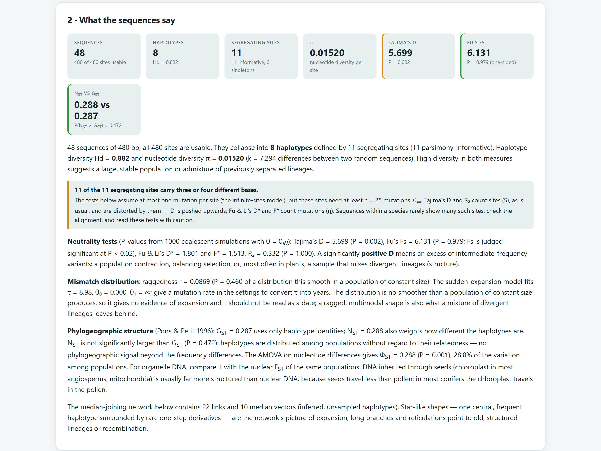
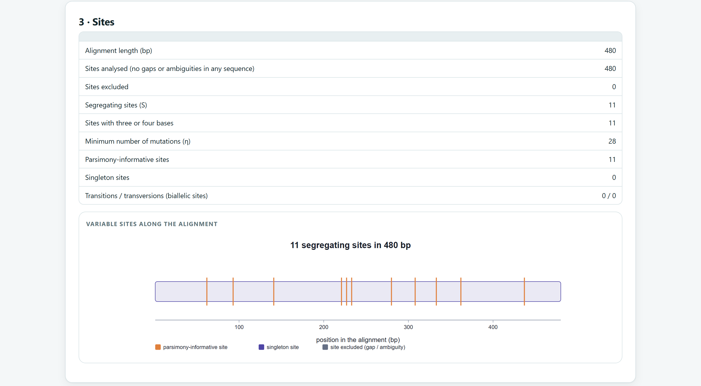
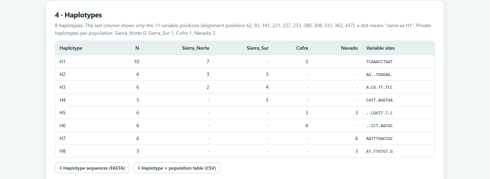
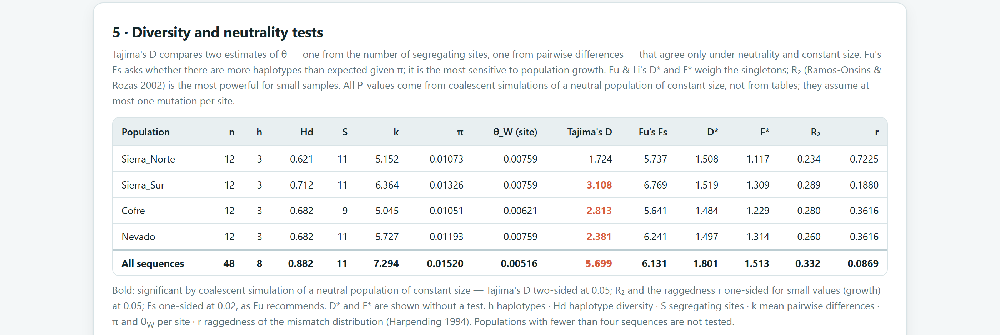
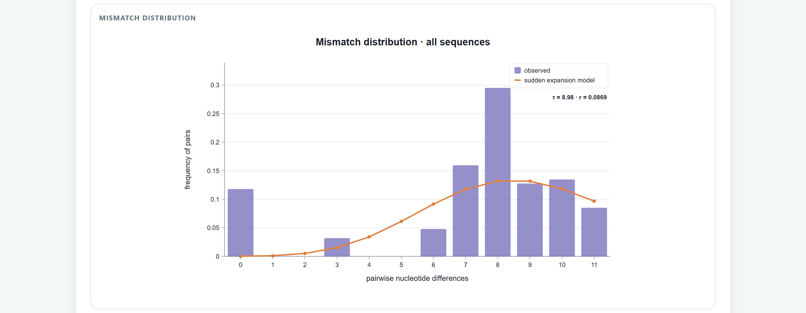
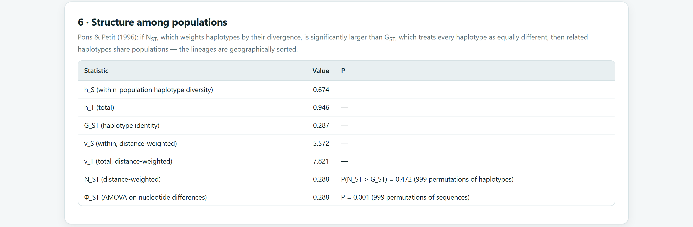
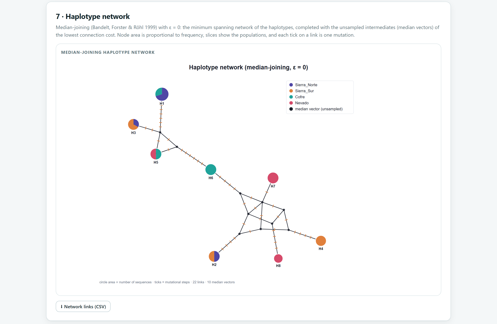
The sequences were simulated under an HKY + Γ model and a relaxed clock of 0.0015 substitutions per site per million years on a tree rooted at 62 Ma. The genera and the fossils are invented, so each date can be compared with the true one.
| Name | Node | Evidence | Ages (Ma) | Shape |
|---|---|---|---|---|
| F1 | Crown of Fictaria + Modelanthus | Rupelian fossil (early Oligocene) | minimum 27.82 · soft maximum 45 | lognormal |
| F2 | Crown of Demoxylon | Aquitanian fossil (early Miocene) | minimum 20.44 | lognormal |
| F3 | Stem of Probocarpa | Chattian fossil (late Oligocene) | minimum 23.03 | exponential |
| S1 | Crown of the five genera | Secondary, from a published tree | 50 ± 4 | normal |
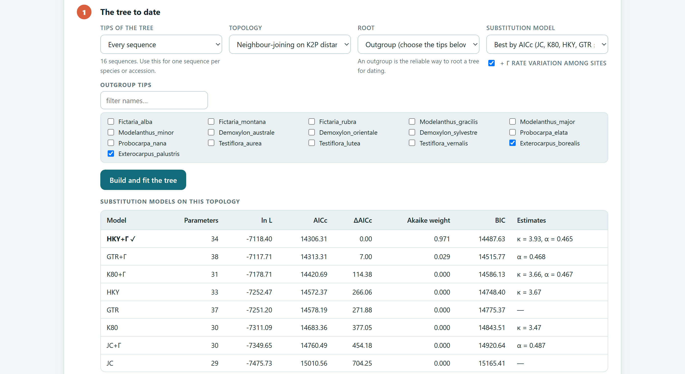
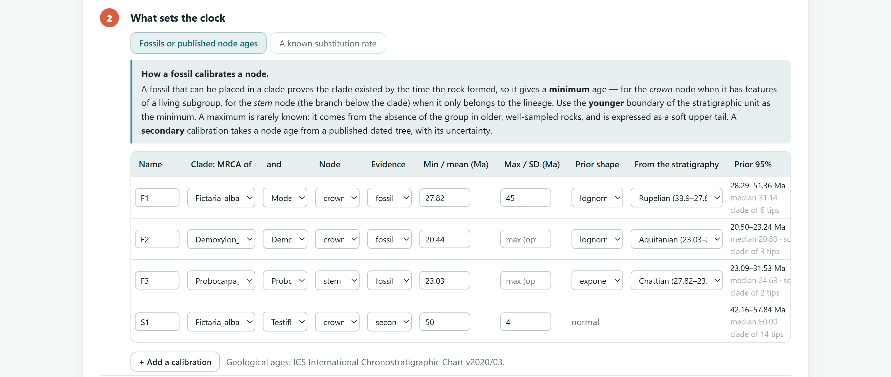
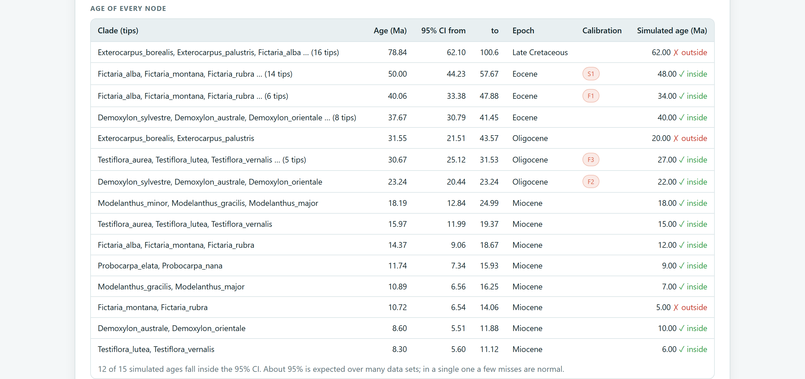
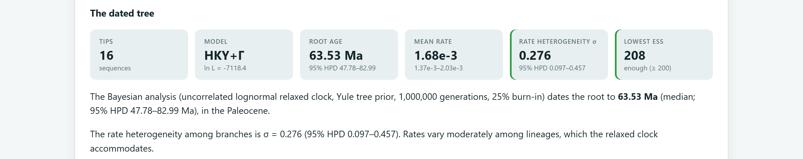
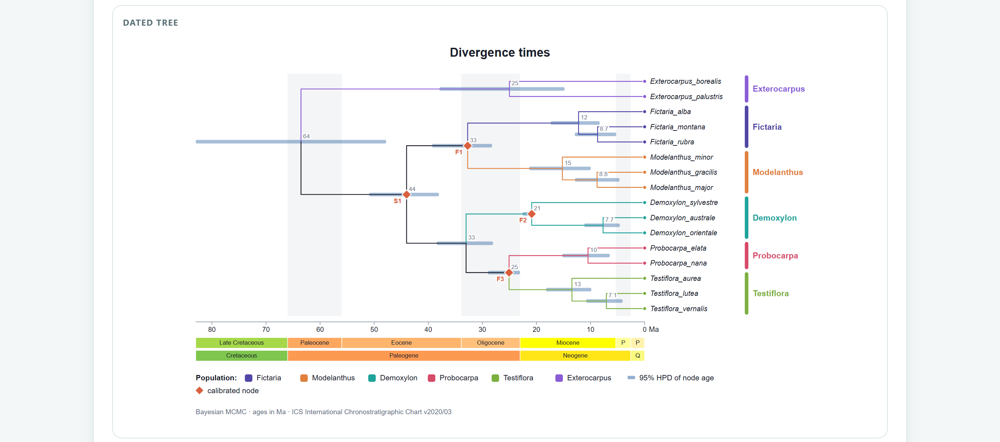
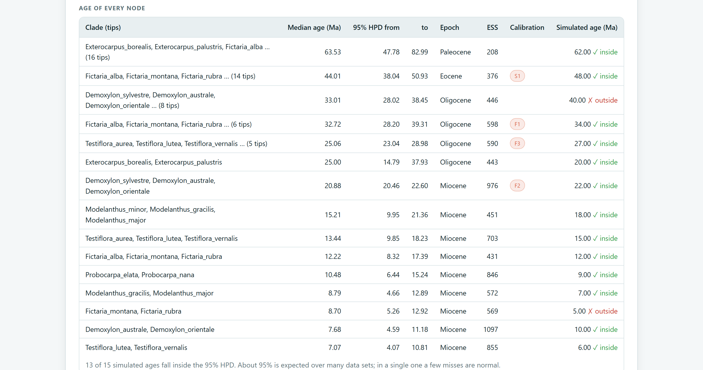
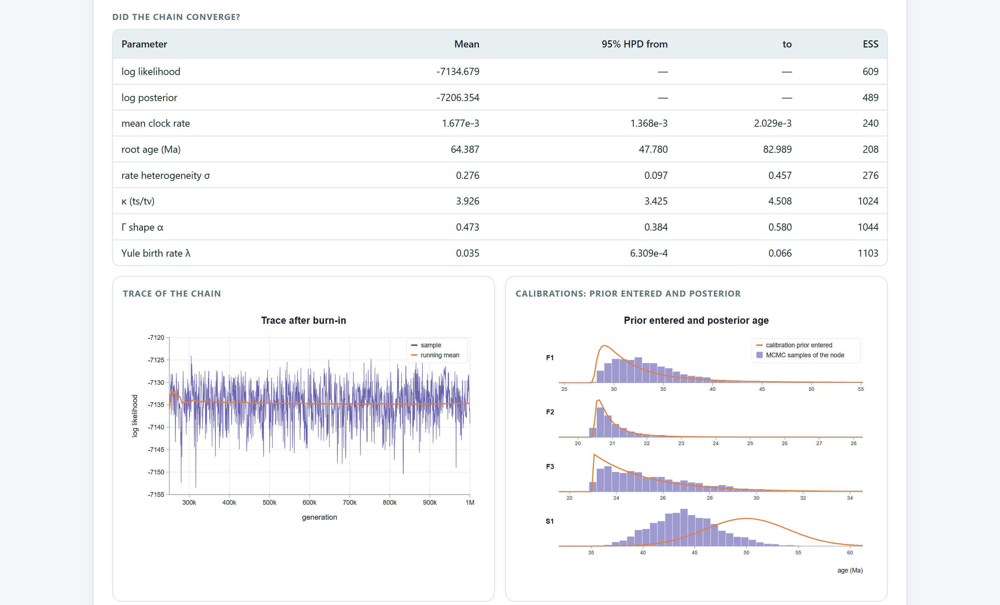
For diversity: n, h, Hd, π and S per population, with complete deletion and the number of sites analysed. For the tests: the statistic, its P value, the number of simulations and the null model (neutral population of constant size). For structure: GST, NST and the number of permutations. For the network: the method and ε. For dating: substitution model, tree and root, each calibration with its evidence, shape and ages (or the rate and its source), clock, tree model, chain length, burn-in, minimum ESS and the seed. The methods section of the Block 10 report writes all of this up.
For this manual, Hd, k, π, S, η and θW for the pine were recomputed independently with no differences; GST and NST were recomputed with equations 6 and 7 of Pons and Petit (10−16), the r index with Harpending’s formula and the Stirling numbers of Fs with exact integer arithmetic. With 4000 samples from an independent coalescent simulator, D, D* and F* had means close to 0. With 250 neutral samples, the tests rejected 4.8% (D), 3.6% (Fs, α = 0.02), 4.0% (R2) and 6.4% (r). The expansion model agreed with an independent implementation, and the median-joining network reproduced the star, chain, square and cube cases. The dating engine passes its tests of transition matrices, the Γ distribution, exact likelihood and root placement, and in the example it recovers 13 of 15 simulated ages.
The next chapter returns to the markers to study demography and space: Block 9 looks for bottlenecks, estimates the effective population size, measures spatial genetic structure and selfing, and compares trait differentiation with genetic differentiation.